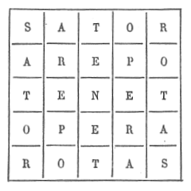

La montée de Saint-Michel et l’Echelle du Roi, de Thueytz. – Le clocher et la chapelle. – L’abbaye de Saint-Séguret. – Le chanoine Truanus. – Les terreurs de l’an 1000. – L’inscription Sator Arepo. – Le registre des visiteurs. – Impressions des touristes. – La chapelle Saint-Clair. – Le roman de M. Montaigne.
Après l’ascension du rocher Corneille, nous fîmes celle de la chapelle Saint-Michel, perchée, comme on sait, au sommet d’une aiguille basaltique, de 90 mètres de hauteur. On y arrive par un escalier tortueux de 220 degrés, pratiqué à la surface méridionale du dike, dans le genre de la fameuse Echelle du Roi que tous les touristes vont visiter à Thueytz ((Ardèche), mais beaucoup moins pénible que ladite Echelle, car les degrés de celle-ci sont formés par les têtes mêmes des prismes, raboteuses et inégales, tandis qu’à Saint-Michel, ce sont de véritables marches en grès, que l’on a bâties à chaux et à sable, dans les anfractuosités de la brèche volcanique, avec accompagnement d’un bon parapet qui rend l’ascension facile et sans danger.
On aborde l’escalier par un vieux portail roman, où une brave femme perçoit dix centimes par visiteur. Il paraît que ce monument appartient à la commune d’Aiguilhe, qui en afferme l’exploitation au plus offrant, et en retire ainsi de 600 à 700 francs par an.
Des herbes et des arbustes décorent les fissures de la roche. Çà et là, on aperçoit même des iris. De petites concavités, creusées de distance en distance, forment des espèces de niches, où se tenaient probablement les mendiants échelonnés sur le passage des pèlerins.
La chapelle et le clocher, qui forme un corps séparé, couvrent le sommet du dike, et sont entourés d’une étroite terrasse où l’on chemine en sûreté entre le rocher et les solides parapets qui bordent la plateforme.
L’ensemble du monument est remarquable par la hardiesse de sa structure et par sa parfaite harmonie avec les proportions de l’énorme piédestal que la nature lui avait préparé.
De la plateforme à la porte de la chapelle, il faut encore monter une vingtaine de marches, qui sont ornées sur les côtés de vases d’arbustes et de plantes grasses entretenus par la gardienne du monument.
La façade de la chapelle est une perle du style roman enjolivé des élégantes mosaïques, qui sont le cachet multicolore de l’architecture des pays volcaniques. Il y a de nombreux sujets de sculpture, trop souvent décrits pour qu’il soit nécessaire d’y revenir ici. Mangon de la Lande crut y reconnaître des restes de paganisme confondus avec les attributs de la catholicité. Il suppose que le temple primitif était consacré à Mercure, le messager ailé qui conduit les âmes au séjour des morts, et ce serait, en vue de ménager la transition des idées et des croyances, que l’archange ailé qui pèse les âmes aurait été donné pour successeur à ce dieu. Nous avouons n’y avoir rien vu de païen, à moins qu’on ne veuille donner ce caractère à deux sirènes qui surmontent la porte.
L’intérieur de la chapelle donne l’idée d’une crypte plutôt que d’une chapelle aérienne. Il y a trois parties distinctes : la nef, de forme arrondie, dont cinq ou six colonnettes irrégulièrement disposées supportent le toit et où peuvent se tenir une cinquantaine de personnes ; le chœur, qui est assez étroit, et une petite sacristie placée sur sa gauche au-dessus de la porte d’entrée.
On remarque, sur le maître-autel, la statue de l’archange saint Michel, donnée par la marquise de M… et, sur les côtés de l’entrée du chœur, deux belles statues de l’ange Gabriel et de l’ange Raphaël, l’une tenant le bénitier, et l’autre, le tronc des offrandes. La présence de ces deux anges est fort explicable, s’il est vrai, comme le dit Jacmon, qu’il y avait autre fois, au bas du rocher, deux chapelles, surmontées d’une habitation, qui leur étaient dédiées. Il paraît qu’il y en avait encore une troisième dédiée à saint Guinefort. Mais toutes trois ont disparu sans laisser de traces.
On suppose que le rocher Saint-Michel fut d’abord un lieu de refuge et qu’une tour s’y éleva primitivement sur la place du clocher actuel. L’espace existant devant la tour aurait été, à une époque ignorée, approprié à l’usage d’une modeste chapelle, marquée par trois absidioles plus ou moins reconnaissables. Plus tard enfin, on aurait construit la nef ainsi que la façade actuelle, et c’est à cette réparation sans doute, bien plus qu’à la fondation propre de l’édifice, que se rapporte la charte de 962, qui désigne le chanoine Truanus comme fondateur de la chapelle.
Une vieille maison, avec une tour semi-circulaire au milieu de la façade, porte encore, au bas du rocher, le nom d’abbaye de Saint Séguret. On pense qu’elle servait d’habitation aux moines chargés du service de la chapelle.
A propos de la date de 962, qui précise l’œuvre du chanoine Truanus, il n’est pas hors de propos de remarquer que le titre qui nous l’a fait connaître, ne contient aucune allusion aux terreurs de l’an 1000, et qu’à cette même période, c’est-à dire à la seconde moitié du Xe siècle, se rapportent les dates de construction ou de réparation de cent douze illustres abbayes ou monastères, parmi lesquels celui de Saint-Pierre-la-Tour au Puy. La croyance à la fin du monde n’était donc pas aussi générale qu’on l’a dit. On peut se demander même si elle a réellement existé. Il est certain qu’après l’an 1000, il y eut un grand mouvement architectural, surtout en Italie et dans les Gaules, mais il peut s’expliquer par d’autres causes que par les terreurs supposées du siècle précédent, ainsi que l’a fort bien démontré M. Jules Roy (1).
M. Villiet a constaté que la décoration la plus ancienne de la chapelle remontait au XIe siècle. Elle fut, au XIIIe, cachée sous un enduit peint et historié, qui fut lui-même badigeonné au XVe, pour recevoir de nouveaux dessins. M. Anatole d’Auvergne a gratté et mis au jour plusieurs de ces peintures et a découvert le nom d’un des artistes.
Une inscription, que nous connaissions depuis bien longtemps, pour l’avoir lue sur la porte de la vieille église de Saint-Laurent, à Rochemaure, se trouvait, paraît-il, peinte en noir sur l’ancien enduit de la chapelle Saint-Michel. Nous la reproduisons parce qu’en paraissant adopter l’interprétation de M. Wescher, qui l’avait retrouvée dans un manuscrit de la Bibliothèque Nationale, les Annales de la Société d’Agriculture du Puy (1875) ont, à mon avis, fait fausse route.
La voici :

Cette inscription a été retrouvée dans bien d’autres endroits, notamment au sommet du grand escalier de la tour ronde du château de Loches, où elle avait été gravée sur la pierre tendre par la main inexpérimentée d’un prisonnier, en écriture gothique minuscule de la fin du XVe siècle. Un écrivain de l’endroit, nommé Edmond Gauthier, qui l’a relevée dans une étude historique sur le donjon de Loches, l’appelle un carré magique ; il ajoute que cette phrase n’a aucune signification et il ne la cite qu’à cause de la disposition particulière des lettres qui permet de lire dans tous les sens les mots qui la composent.
M. Wescher, lui, la traduit ainsi :
« Le semeur est à la charrue ; le travail (du labour) occupe les roues. »
Il me semble que c’est aller chercher midi à quatorze heures, ce qui est, d’ailleurs, le propre des savants. L’inscription en question est ce qu’on appelle une inscription boustrophédone, qu’il faut lire à la façon dont les bœufs tracent leurs sillons, c’est-à-dire, en lisant la première ligne de gauche à droite, la seconde de droite à gauche, la troisième d’abord de gauche à droite puis de droite à gauche, la quatrième de gauche à droite, enfin la cinquième de droite à gauche, M. Jules Quicherat, qui l’a lue ainsi, a trouvé :
Sator
Opera
Tenet
et
Tenet
Opera
Sator,
c’est-à-dire une pensée éminement morale, qui correspond à l’adage : Comme on a semé, l’on cueille, ou bien à la maxime saint-simonienne : A chacun selon ses Œuvres, ou bien s’il est permis à l’archéologie de donner des leçons à la politique : Un peuple n’a jamais que le gouvernement qu’il mérite (2).
Branbran s’amusa à parcourir le registre, placé dans la chapelle, comme une invite aux touristes d’y écrire leurs impressions, et nous lut les noms ou la prose de quelques-uns d’entre eux. Il y a là comme un résumé de la pensée française, généralement pieuse et touchante dans sa simplicité, au milieu de quelques traits de gaîté déplacée. La plupart des noms sont précédés d’un souhait ou d’une prière, pour la guérison d’un parent, le succès d’un examen, le bonheur de quelques amis. En voici des specimens :
1er juin : « Grand saint Michel, je vous demande la grâce de protéger toute notre famille et de me faire réussir au baccalauréat. Je vous en supplie pour ma mère et ensuite pour mon avenir. »
18 juin : « Grand saint Michel, obtenez un bon accouchement à Adrienne et Julie. » La signature est d’un Marseillais.
1er juillet : « Grand saint Michel, bénissez mon mari, mes enfants et moi en particulier, pour être le bon ange de ma famille. Je vous prie pour mes enfants et surtout pour mon mari. Faites-moi la grâce d’être obéissante et bien douce, et que nous fassions tous une bonne et heureuse mort. Bénissez le commerce de mes parents et donnez-leur à tous la santé, s’il vous plaît. »
Le nom y est en toutes lettres, mais il serait peut-être indiscret de le mentionner. Bornons-nous à dire que la bonne épouse et mère qui a écrit ces lignes, est née à Privas et habite le département de la Loire.
10 juillet : « Grand saint Michel, donnez-moi la sagesse. »
24 juillet : « Grand saint Michel, gardez mon frère Jean Marie, et faites qu’il n’y ait pas de guerre. »
Des institutrices congréganistes prient saint Michel pour leurs élèves et pour leur communauté.
Un souhait analogue est émis pour les élèves du lycée des jeunes filles de Niort et aussi pour les Niortais.
Des soldats, qui trouvent le service long, prient saint Michel d’en abréger la durée.
Des habitants d’Usson écrivent : « Vive Dieu et Usson ! »
Un « Croyant » écrit le 21 juin : « émerveillé du pittoresque du site et du travail surhumain qu’il a fallu pour construire cette chapelle au sommet de ce pain de sucre, je rends hommage à cette force qui nous permet à nous pauvres humains d’accomplir de grandes choses. »
Parmi les impressions politiques, on peut noter celle-ci : « Vive saint Michel ! Vive la France ! Vive la République ! » signées par des ecclésiastiques, le 14 mai, jour de la fête de Jeanne d’Arc.
4 juin : « Saint Michel, protégez le Vivarais et la Croix ! » signé par un prêtre de l’Ardèche.
« Saint Michel, daignez bénir mon ministère, ainsi que toute ma famille », signé par un vicaire d’Annonay.
12 juillet : « O vous, grand saint Michel, qui avez terrassé les anarchistes du ciel, veuillez écraser ceux de la terre. L. G. »
Ceci vient naturellement après l’assassinat de Carnot.
Un farceur, qui signe Alfred, écrit : « A saint Michel, faites-moi le plaisir de m’envoyer quelques centaines de millions. »
Qu’en ferais-tu ? dit Branbran. Un mauvais usage sans doute ; cela ressort du ton même de ta plaisanterie. Grand saint Michel, accordez à ce pauvre diable, une somme équivalente de pitié et insufflez-lui un peu de bon sens.
Le 8 juillet a inspiré les mauvais vers qui suivent :
Pour grimper sans peur
A cette hauteur,
Par telle chaleur,
Il a fallu de mon cœur
Toute la vaillante ardeur,
Mais aussi quel vrai bonheur
Quand on trouve dans le chœur
Une agréable fraîcheur !
Des élèves de Craponne ayant prié, deux jours après, pour la réussite de leurs examens, un gai visiteur a écrit au-dessous :
Saint Michel, pour avoir tant sué,
Il est juste de donner un bon succès
A des élèves si désespérés.
N’oublions pas les visiteurs anglais : 24 juillet : « Saint Michel, give me strength to wait. If you are, you must understand – humblement – Eugène Fayolle. »
Un autre du 8 août : « Forget me not. » Ne m’oubliez pas.
En descendant de Saint-Michel, Branbran nous fit remarquer le petit monument octogone, appelé aujourd’hui la chapelle Saint-Clair, où Mangon voyait un temple de Diane. Cet édicule, à l’époque où il le visita (1823), servait de grange et se dégradait ; pour le sauver, on l’a élevé au rang de monument historique. On pense que c’est un ancien baptistère chrétien.
Le faubourg d’Aiguilhe, qui forme aujourd’hui une commune distincte du Puy, dépend de la paroisse Saint-Laurent, qui a pour centre l’église et l’ancien couvent des Dominicains. On a restauré dans une chapelle de cette église le monument qui reçut les entrailles de Duguesclin. Ce lieu a été le berceau de deux célébrités d’un genre différent : le chanoine Raymond d’Agiles et le fondeur Crozatier. Le premier était secrétaire d’Adhémar de Monteil, et, ayant suivi son évêque à la première croisade, en a laissé un récit précieux, puisque c’est le seul, croyons-nous, qui émane d’un témoin oculaire, mais singulièrement empreint des crédulités de l’époque ; il eut pour collaborateur Pons de Balazuc, un chevalier du Vivarais, qui fut tué au siège d’Archos en 1099. La chronique de Raymond d’Agiles, publiée d’abord dans le recueil de Bongars (Gesta Dei per Francos), a été rééditée avec une préface d’un grand intérêt dans le nouveau recueil des Historiens des Croisades. On y voit qu’il dédia son livre à l’évêque de Viviers.
Savez-vous, dit Branbran, la manière irrévérencieuse dont le populaire ponot explique l’origine du dike saint Michel ?
– Non, dit Bodin, mais je serais bien aise de l’apprendre.
– Eh bien ! on dit que Gargantua, passant sur nos montagnes, posa un pied sur la plaine de Rome et l’autre sur Corneille, et, se penchant, il ingurgita la rivière de Borne, et, de même qu’en fiantant, pour nous servir du mot de Rabelais, le géant avait formé le mont Gargan près de Nantes, il donna naissance par un semblable procédé au pic pyramidal d’Aiguilhe. Les meuniers étonnés que l’eau manquât subitement à leur moulin, constatèrent le fait qu’ils ont transmis à la postérité.
Je vous jure, ajouta Branbran, que je n’aurais pas osé vous révéler ce phénomène de la vie intime de Gargantua, si le plus sérieux des recueils du Puy n’avait déjà commis cette indiscrétion.
M. Montaigne ne nous avait pas accompagnés ce matin-là, parce qu’il n’avait pas voulu traverser le Puy, sans faire une première visite à sa sœur, supérieure d’un des grands établissements religieux de cette ville. Par suite de cette indifférence au moins apparente, que l’on trouve si souvent chez les vieillards, le frère et la sœur, quoique liés par une grande affection mutuelle, ne se voyaient pas souvent et ne s’écrivaient guère plus. M. Montaigne cependant avait voulu revoir cette année la vénérable religieuse, qui n’était guère moins âgée que lui, et cette visite avait été l’objet principal de son voyage. Or, par une coïncidence assez singulière, sa sœur avait éprouvé le même désir, et une lettre d’elle, qui venait de lui être renvoyée du Midi, le priait de ne pas laisser passer la belle saison, sans venir lui faire une visite, qui serait probablement la dernière. Et, comme cette lettre semblait, de plus, indiquer qu’on avait une communication particulière à lui faire, il se demandait ce que cela pouvait bien être, toutes questions d’intérêt et autres étant réglées entre eux depuis de longues années.
A sa rentrée à l’hôtel, le vieillard me parut triste et préoccupé. Sachant qu’il avait dû voir sa sœur, je supposai qu’il était inquiet de sa santé, et je lui en demandai des nouvelles. Après quelques hésitations, il me raconta les causes de son émotion, qui se rattachaient à l’incident le plus douloureux de sa longue existence. En deux mots, il avait aimé jadis une jeune fille qui, malgré toutes ses supplications et les conseils de sa propre famille, avait voulu entrer au couvent. M. Montaigne n’en avait pas entendu parler depuis bien longtemps et il avait toujours évité de rechercher ce qu’elle était devenue ; ce matin même, il ignorait si elle existait encore, et c’est d’elle qu’il venait d’entendre parler par sa sœur. Elle était morte depuis peu dans la communauté même dont Mlle Montaigne était supérieure, et elle avait dit à celle-ci avant de mourir : « J’ai une chose, ma mère, à vous, demander : c’est que vous remettiez, de ma part, ce livre à votre frère, en lui donnant l’assurance que je prierai pour lui dans le ciel ! » Le livre était une Imitation de Jésus-Christ, et c’est pour remplir la commission de la mourante que la supérieure avait prié son frère de venir.
Bien qu’un demi-siècle, passé sur ce douloureux incident de sa vie, eût ramené, sinon l’oubli, au moins le calme, dans l’âme de mon interlocuteur, la nouvelle de la mort de Thérèse (c’est ainsi qu’elle s’appelait) et le message inattendu qu’elle avait confié à sa supérieure, avaient ému profondément le vieillard. Tout cela lui avait rappelé certaines particularités d’autrefois de nature à lui faire croire qu’il n’avait pas été indifférent à celle qu’il aimait, mais qui étaient sorties de son esprit, parce que cette supposition lui avait paru inconciliable avec le dénouement survenu. Cependant elle s’était souvenue de lui à son lit de mort, et elle avait voulu le lui faire savoir. O mystères du cœur féminin ! Comme il avait voulu éclaircir le problème, sa sœur lui avait dit : « Mon frère, vous êtes trop étranger au commerce des saintes âmes avec Dieu pour comprendre la résolution de Thérèse ; mais peut-être, en méditant sur son envoi d’outre-tombe, à l’aide du livre sacré que je viens de vous remettre de sa part, finirez-vous par pénétrer son secret. »
Ce mot de secret me rappella qu’il y en avait aussi un dans la destinée de Mlle Tempier, et je me promis bien de faire expliquer à ce sujet ma petite amie, « la Sarrasine », la première fois que j’aurais l’occasion de la voir.